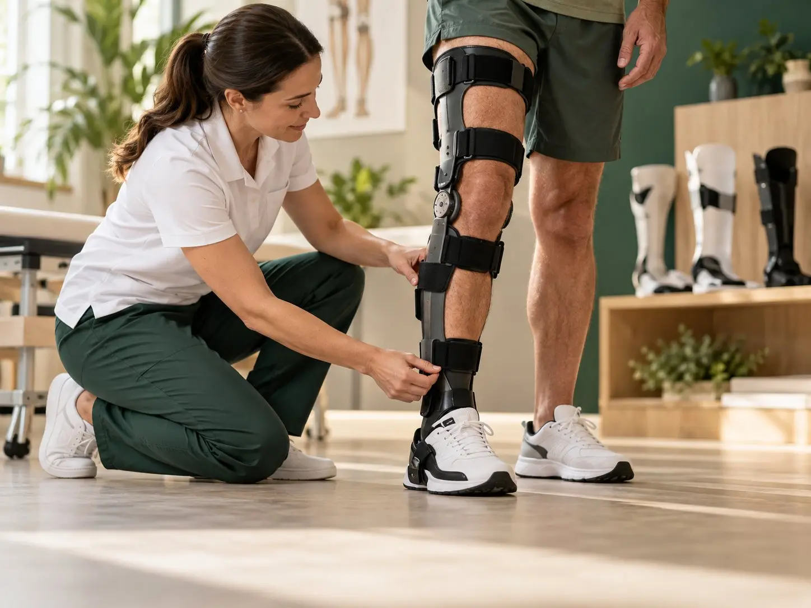
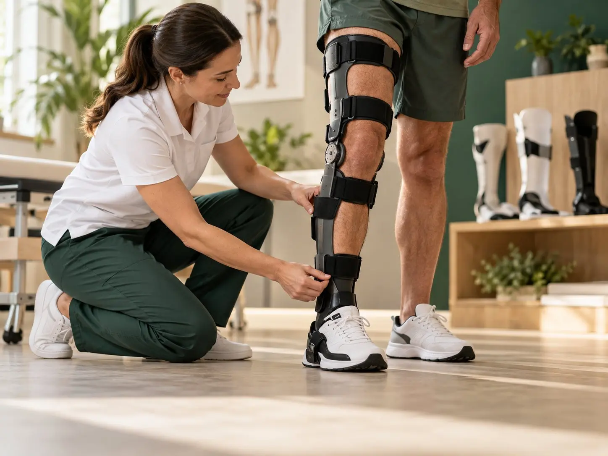
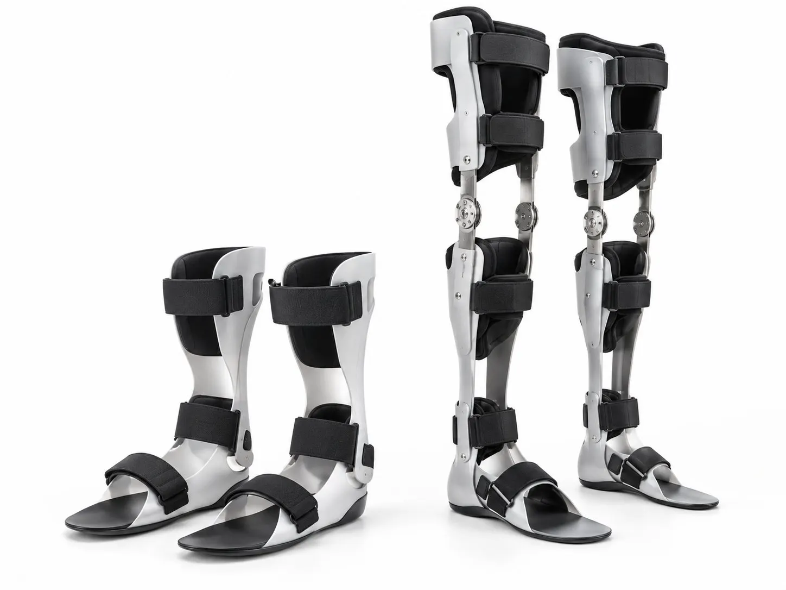

AFO vs KAFO vs HKAFO: Which Leg Brace Do You Need?
The letters look confusing, but they just tell you which joints the brace covers. Here's how the three main leg braces compare.

Custom leg braces that support weak muscles, control the ankle or knee and help you walk more safely. Made to your measurements and fitted by our orthotists.

The names look confusing, but they simply describe which joints the brace covers. “O” stands for orthosis, which is the medical word for a brace.
| Brace | What it covers | Often used for |
|---|---|---|
| AFO (ankle foot orthosis) | Foot and ankle, up to just below the knee | Foot drop, weak ankle, stroke, cerebral palsy, toe walking |
| KAFO (knee ankle foot orthosis) | Foot, ankle and knee, up to the thigh | Weak thigh muscles, knee giving way, polio, knee bending backwards |
| HKAFO (hip knee ankle foot orthosis) | Foot, ankle, knee and hip | Weakness at the hip and trunk, some spinal cord conditions |
If you’d like the full comparison, read our guide AFO vs KAFO vs HKAFO: which leg brace do you need?
An AFO is the most common leg brace we make. It usually sits inside your shoe and runs up the back of your calf. There are a few main types:
AFOs can help people after a stroke, with nerve damage, multiple sclerosis or cerebral palsy, and children who walk on their toes.
A KAFO adds a knee joint and a thigh section to the brace. It’s used when the knee is weak and gives way, or bends backwards too much when you stand.
Many KAFOs have a knee joint that locks straight while you walk and unlocks so you can sit down. Some newer designs only lock when you put weight on the leg. We’ll explain which type suits your strength and your daily routine.
An HKAFO goes all the way up to the hip and sometimes links to a waist or trunk section. It’s used when there’s weakness in the hips or trunk as well as the legs, for example after some spinal cord injuries or with spina bifida. These braces help people stand and, in some cases, walk with support from crutches or a walker.
Wear a thin, clean sock under your brace. Check your skin every day for red marks that don’t fade, especially around the ankle bones and heel. Wipe the brace with a damp cloth and let it dry before wearing it again.
Bring your brace back to us if it cracks, the straps wear out, it starts to rub or it no longer fits your shoes. For children, see our page on pediatric orthotics, as growing legs need more regular checks.

AFO stands for ankle foot orthosis. It's a brace that goes from below the knee down to the foot. A KAFO (knee ankle foot orthosis) also covers the knee, and an HKAFO (hip knee ankle foot orthosis) goes up to the hip.
For many people, yes. Foot drop means you can't lift the front of your foot properly, so your toes catch the ground. An AFO holds the foot up while you swing your leg forward, which can make walking safer. The best design depends on what's causing the foot drop.
Often you can. Many people need a shoe that's a little wider or half a size bigger, with a removable insole and laces or straps. Bring your usual shoes to your fitting and we'll check them with you.
Build up slowly. Start with an hour or two and add time each day while checking your skin. We'll give you a wearing plan that suits your brace and your condition.
A solid AFO holds the ankle still. It gives the most support and control. A hinged (articulated) AFO has a joint at the ankle, so it allows some movement. This can feel more natural on stairs and slopes, but it isn't right for every condition.
This page gives general information only. It isn't medical advice. Please talk to your doctor or our team about your own needs.

The letters look confusing, but they just tell you which joints the brace covers. Here's how the three main leg braces compare.

Why children wear braces, what the fitting is like and practical tips to help your child get used to their new AFO.